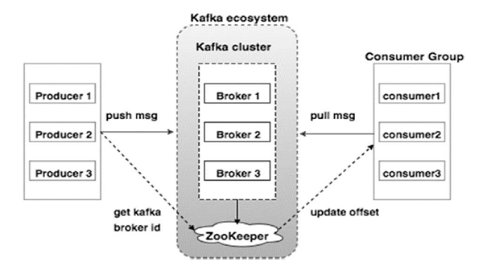

集群
组件
代理
Kafka集群通常由多个代理组成以保持 负载平衡
- 一个Kafka代理实例可以每秒处理数十万次读取和写入，每个Broker可以处理TB的消息，而没有性能影响
- Kafka代理是 无状态 的，所以他们使用 ZooKeeper 来维护它们的集群状态
- Kafka代理的 领导选举 可以由ZooKeeper完成
ZooKeeper
ZooKeeper用于 管理和协调 Kafka代理：
- 通知 生产者和消费者 Kafka系统中 存在任何新代理 或Kafka系统中 代理失败
- 根据Zookeeper的通知， 产品和消费者 采取决定 并开始与 某些其他代理 协调 他们的任务
生产者
生产者将 数据 推送 给 代理 ：
- 当 新代理启动 时， 所有生产者 搜索 它并 自动 向该新代理 发送 消息
- 生产者 不等待来自代理的确认 ，并且发送消息的速度与代理可以处理的一样快
消费者
- 因为Kafka代理是 无状态 的，这意味着 消费者 必须通过使用 分区偏移 来 维护 已经消耗 了多少消息
- 如果消费者 确认 特定的 消息偏移 ，则意味着消费者已经 消费了所有先前的消息
- 消费者 向 代理 发出 异步拉取请求 ，以具有 准备好 消耗的字节缓冲区
- 消费者可以简单地通过 提供偏移值 来 快退 或 跳到 分区中的任何点
- 消费者偏移值由ZooKeeper通知
下图显示Kafka的集群：
